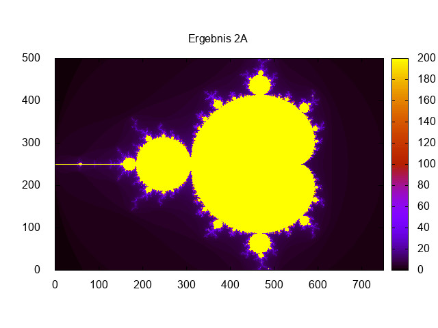
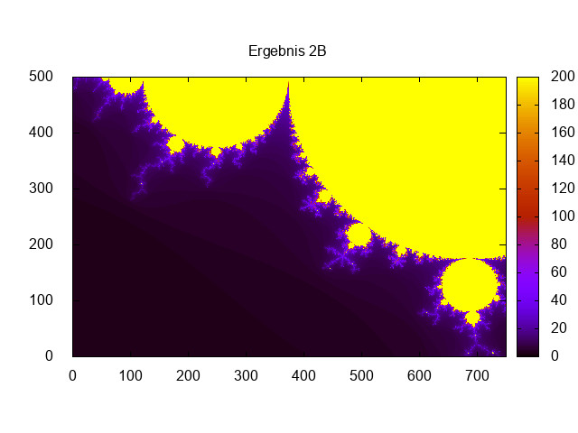
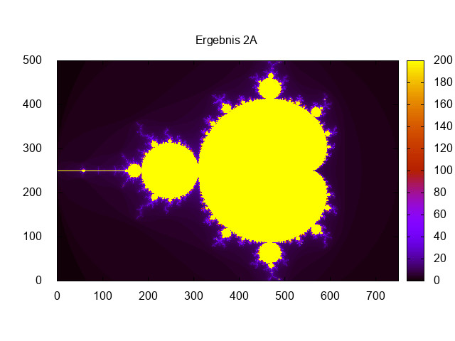
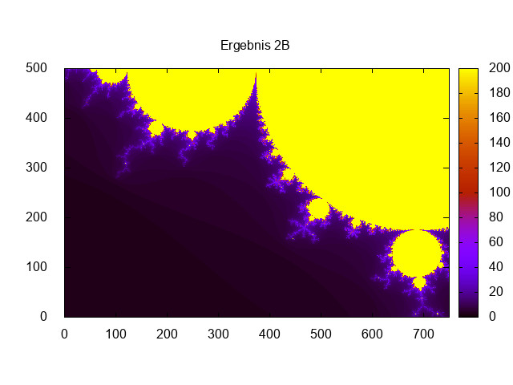

Table of Contents
1 Richard Fehler [1839907] und Manuel Wenzel[].
Implementierung einer Klasse komplexer Zahlen in C++ und Visualisierung vom Konvergenzverhalten komplexer Zahlenfolgen.
2 Source Code:
2.1 complex.h
/* complex.h */ #ifndef COMPLEX_H_ #define COMPLEX_H_ #include <cstddef> class MyComplex { // Beginn der MyComplex Klasse public: // Constructor MyComplex(const double& real, const double& imag); // Default Constructor MyComplex(); // Copy-Constructor MyComplex(const MyComplex& c); // Destructor ~MyComplex(); // Return real-part of MyComplex const double real() const; // Return imag-part of MyComplex const double imag() const; // Return norm of MyComplex const double norm() const; // Ausgabe aller Einträge void print(const std::string title = "", const int w = 8) const; // const int w=8 default Wert für Abstand. // Übergabe bei Aufruf optional // Copy Operator MyComplex& operator=( const MyComplex& c); //& was ist der Unterschied zwischen MyComplex & // operator, MyComplex operator // MyComplex-Addition const MyComplex operator+(const MyComplex& c2) const; // MyComplex-Addition const MyComplex operator+(const double& skal) const; // MyComplex-Subtraktion const MyComplex operator-(const MyComplex& c2) const; const MyComplex operator-() const; // Multiplikation mit Complex const MyComplex operator*(const MyComplex& c2) const; // Multiplikation mit Skalar const MyComplex operator*(const double& lambda) const; private: double* dataPtr; // pointer for data }; // Ende der Vector Kasse #endif
2.2 complex.cpp
/* complex.cpp */ #include <cassert> #include <cmath> #include <cstddef> #include <cstdlib> #include <iomanip> #include <iostream> #include "complex.h" using namespace std; // Constructor MyComplex::MyComplex(const double& real, const double& imag) { this->dataPtr = new double[2]; this->dataPtr[0] = real; this->dataPtr[1] = imag; }; MyComplex::MyComplex() { this->dataPtr = new double[2]; }; // Copy-Constructor MyComplex::MyComplex(const MyComplex& c) { this->dataPtr[0] = c.dataPtr[0]; this->dataPtr[1] = c.dataPtr[1]; }; // Destructor MyComplex::~MyComplex() { delete[] this->dataPtr; }; // Return real-part of MyComplex const double MyComplex::real() const { return this->dataPtr[0]; }; // Return imag-part of MyComplex const double MyComplex::imag() const { return this->dataPtr[1]; }; // Return norm of MyComplex const double MyComplex::norm() const { return (sqrt((this->dataPtr[0] * this->dataPtr[0]) + (this->dataPtr[1] * this->dataPtr[1]))); }; // Copy Operator MyComplex& MyComplex::operator=(const MyComplex& c) { delete[] this->dataPtr; // try to allocate memory and catch an exception this->dataPtr = new double[2]; // do the copying this->dataPtr[0] = c.dataPtr[0]; this->dataPtr[1] = c.dataPtr[1]; return *this; //*this warum * }; // MyComplex-Addition const MyComplex MyComplex::operator+(const MyComplex& c2) const { const MyComplex tmp; for (std::size_t m = 0; m < 2; m++) tmp.dataPtr[m] = this->dataPtr[m] + c2.dataPtr[m]; return tmp; }; const MyComplex MyComplex::operator+(const double& skal) const { const MyComplex tmp; tmp.dataPtr[0] = this->dataPtr[0] + skal; tmp.dataPtr[1] = this->dataPtr[1]; return tmp; }; // MyComplex-Substraktion const MyComplex MyComplex::operator-(const MyComplex& c2) const { const MyComplex tmp; for (std::size_t m = 0; m < 2; m++) tmp.dataPtr[m] = this->dataPtr[m] - c2.dataPtr[m]; return tmp; }; // MyComplex-Unäres const MyComplex MyComplex::operator-() const { const MyComplex tmp; for (std::size_t m = 0; m < 2; m++) tmp.dataPtr[m] = -(this->dataPtr[m]); return tmp; }; // Multiplikation mit Skalar const MyComplex MyComplex::operator*(const double& lambda) const { const MyComplex tmp; tmp.dataPtr[0] = lambda * this->dataPtr[0]; tmp.dataPtr[1] = lambda * this->dataPtr[1]; return tmp; }; // Skalarprodukt const MyComplex MyComplex::operator*(const MyComplex& c2) const { const MyComplex tmp; tmp.dataPtr[0] = (this->dataPtr[0] * c2.dataPtr[0]) - (this->dataPtr[1] * c2.dataPtr[1]); tmp.dataPtr[1] = (this->dataPtr[0] * c2.dataPtr[1]) + (this->dataPtr[1] * c2.dataPtr[0]); return tmp; };
2.3 maincomplexbeispiel.cpp
#include <iostream> #include <string> // header file for own complex number class #include "complex.h" using namespace std; void output_my_cplx(const MyComplex &c, const std::string txt) { cout << txt << ": (" << c.real() << ", " << c.imag() << ")" << endl; } int main() { MyComplex z1{2., 7.}; MyComplex z2{42., -9}; MyComplex z3{-11., 19.}; MyComplex z4, z5, z6, z7, z8, z9; output_my_cplx(z1, "z1 "); output_my_cplx(z2, "z2 "); output_my_cplx(z3, "z3 "); z4 = z1 * z2; output_my_cplx(z4, "z4=z1*z2 ="); z5 = (z1 + z2); output_my_cplx(z5, "z5=(z1+z2) ="); z6 = (z1 + z2) * 2.; output_my_cplx(z6, "z6=(z1+z2)*2. = "); z7 = (z2 + z3) * z1; output_my_cplx(z7, "z7=(z2+z3)*z1 = "); z8 = z1 + 5.; output_my_cplx(z8, "z8=z1+5. = "); z9 = -z1 + z2; output_my_cplx(z9, "z9=-z1+z2 = "); return 0; }
2.4 operator Schreibweise
#include <iostream> #include <string> // header file for own complex number class #include "complex.h" using namespace std; void output_my_cplx(const MyComplex &c, const std::string txt) { cout << txt << ": (" << c.real() << ", " << c.imag() << ")" << endl; } int main() { MyComplex z1{2., 7.}; MyComplex z2{42., -9}; MyComplex z3{-11., 19.}; MyComplex z4, z5, z6, z7, z8, z9; output_my_cplx(z1, "z1 "); output_my_cplx(z2, "z2 "); output_my_cplx(z3, "z3 "); z4.operator=(z1.operator*(z2)); output_my_cplx(z4, "z4=z1*z2 ="); z5.operator=(z1.operator+(z2)); output_my_cplx(z5, "z5=(z1+z2) ="); z6.operator=((z1.operator+(z2)).operator*(2.)); output_my_cplx(z6, "z6=(z1+z2)*2. = "); z7.operator=((z2.operator+(z3)).operator*(z1)); output_my_cplx(z7, "z7=(z2+z3)*z1 = "); z8.operator=(z1.operator+(5.)); output_my_cplx(z8, "z8=z1+5. = "); z9.operator=((z1.operator-()).operator+(z2)); output_my_cplx(z9, "z9=-z1+z2 = "); return 0; }
2.5 konvergence.cpp
#include <cmath> #include <fstream> #include <iostream> #include <string> // header file for own complex number class #include "complex.h" using namespace std; int main() { // Variablen MyComplex z0, z1, c0, z_ll, z_ur; double x0, y0, x_m, y_m, delta_x, delta_y, tmp[2]; int nr_iter, n_x_max, n_y_max, n_exp, n_max_iter, r_conv; string filename; // Variablen einlesen //"nr_inter"; cin >> nr_iter; //"Wertebereich"; cin >> x0 >> y0 >> x_m >> y_m; //"Unterteilung"; cin >> n_x_max >> n_y_max; //"exponent"; cin >> n_exp; //"Iterationsschritte"; cin >> n_max_iter; //"Konvergenzradius"; cin >> r_conv; //"Dateiname"; cin >> filename; //"Komplexe Konstante"; cin >> tmp[0] >> tmp[1]; // ofstream für Ausgabedatei vorbereiten ofstream dateiout(filename); // Berechnung delta_x und delta_y delta_x = (x_m - x0) / n_x_max; delta_y = (y_m - y0) / n_y_max; // 2 for-Schleifen, die Intervalle durchlaufen for (size_t i = 0; i < n_x_max; i++) { for (size_t j = 0; j < n_y_max; j++) { // z0 und c0 für die verschiedenen Teilaufgaben und Startwerte switch (nr_iter) { case 1: z0 = MyComplex(x0 + i * delta_x, y0 + j * delta_y); c0 = MyComplex(tmp[0], tmp[1]); break; case 2: c0 = MyComplex(x0 + i * delta_x, y0 + j * delta_y); z0 = MyComplex(tmp[0], tmp[1]); break; case 3: c0 = MyComplex(x0 + i * delta_x, y0 + j * delta_y); z0 = MyComplex(tmp[0], tmp[1]); break; default: cout << "error"; break; } // Variable die Iterationsschritte zählt int i_iter = 0; // while-Schleife die erst endet, wenn Konvergenzradius oder maximale // Iterationen erreicht while (z0.norm() < r_conv && i_iter < n_max_iter) { z1 = z0; // Startwert z0 zuweisen // in for wird Potenz berechnet for (size_t p = 1; p < n_exp; p++) { z1 = z1 * z0; } z1 = z1 + c0; // c0 dazu addieren z0 = z1; // z1 ist nun der neue Wert von z0 i_iter++; } // Ausgabedatei schreiben dateiout << i << " " << j << " " << i_iter << endl; } } cout << filename << "berechnet! " << endl; return 0; }
3 Building
./makefile ./buildkonv.sh
4 Ausfuehren der Berechnung
4.1 Skript:
#!/usr/bin/env bash echo 'starte Berechnung' ./konvergence<start1A.dat echo '1A berechnet' ./konvergence<start1B.dat echo '1B berechnet' ./konvergence<start2A.dat echo '2A berechnet' ./konvergence<start2B.dat echo '2B berechnet' ./konvergence<start3A.dat echo '3A berechnet'
5 Plots
5.1 Skript
#!/usr/bin/env gnuplot set xrange [0:750] set yrange [0:500] set pm3d map set term jpeg print" plotting" set output "Ergebnis1A.jpeg" set title "Ergebnis 1A" spl './ergebnis1A.dat' u 1:2:3 with image print "Ergebnis 1A" unset output unset title set output "Ergebnis1B.jpeg" set title "Ergebnis 1B" spl 'ergebnis1B.dat' u 1:2:3 with image print "Ergebnis 1B" unset output unset title set output "Ergebnis2A.jpeg" set title "Ergebnis 2A" spl 'ergebnis2A.dat' u 1:2:3 with image print "Ergebnis 2A" unset output unset title set output "Ergebnis2B.jpeg" set title "Ergebnis 2B" spl 'ergebnis2B.dat' u 1:2:3 with image print "Ergebnis 2B" unset output unset title set output "Ergebnis3A.jpeg" set title "Ergebnis 3A" spl 'ergebnis3A.dat' u 1:2:3 with image print "Ergebnis 3A" unset output unset title

 


